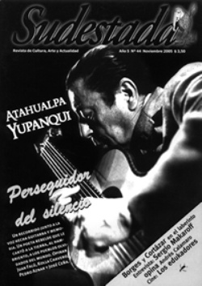

Buscar
De cartones y literatura
Con dos años en la calle, la editorial Eloísa Cartonera no es una curiosidad extravagante en el mundo de la literatura. Sus integrantes rescatan este proyecto como forma de intercambio cultural en América Latina y un espacio para difundir a nuevos autores . Para esta empresa, necesitan como principal motor temperas y cartones.
Edición N° 44
Noviembre 2005
Revista bimensual
Comprar edición impresaSumario
- Atahualpa Yupanqui: Un grito en el silencio
- Saquen una hoja
- Las aventuras del Capitán Makaroff
- La buena edukación/ fin de semana revolucionario
- De cartones y literatura
- La novela de la vida
Compartir Articulo
En el barrio porteño de Almagro, la vidriera de Eloísa Cartonera exhibe algunos de los setenta títulos que componen el catálogo de la editorial. Ricardo Piña hace un año que participa en este proyecto y, al cruzar la puerta de entrada, pide unos minutos: el taller de poesía espontáneo que armó está llegando a su fin. La excusa permite recorrer el local que sirve de atención al público, editorial, imprenta y centro de reunión para diferentes talleres y actividades. Una mesa con cartones apilados, moldes para pintar las tapas y restos de témperas, que no desentonan con el lugar, son los materiales que nunca faltan. En un rincón, bifurcándose por el techo, una raíz construida con la materia que hoy sostiene a la editorial se transforma en la imagen que puede resumir esta experiencia que comenzó a mediados de 2003, encabezada por el escritor Washington Cucurto, la artista plástica Fernanda Laguna y el diseñador grafico Javier Barilaro.
Las paredes, que un principio se compartían con una verdulería, son un gran collage de posters y afiches que mezclan a Maradona, al actual ministro uruguayo Pepe Mujica, tapas de la revista "The Clinic" que Enrique Symms comandó en Chile, y la mirada perdida de Carlos Gardel. "La señora que nos alquila el lugar antes tenían una verdulería y vendíamos cinco kilos de cebollas y un libro por el mismo precio", recuerda Eugenia. En una estantería, se acomodan los libros que con mano propia diseñan, arman y venden. A este proceso, que podría desvelar a más de uno, los integrantes de Eloísa Cartonera lo explican sin vueltas: "Se compra el kilo de cartón a un peso cincuenta, cuando hoy a los cartoneros le dan veinte o treinta centavos, y la única condición es que el cartón sea colorido, limpio y no tan arrugado. Después se corta en medida A4, se los pinta con témperas y, antes de llenar de engrudo los cartones, se los marca con cooters para abrirlos y hacer el lomo. A los interiores se los abrocha y se los pega a las tapas".
Finalizado el taller de poesía espontánea, Ricardo, Julián y Eugenia relatarán la historia de un proyecto que se inició con el propósito de acercar culturas, difundir autores jóvenes y enfrentar una crisis económica que todavía sigue latente. "Empezó todo con la crisis, como respuesta a esta sociedad que dejó marginada a un montón de gente. Se pensó en hacer literatura, dar cabida a autores y, a su vez, poder sacar de la calle y pagarle al laburante del cartón", sintetiza Ricardo.
"En todas las calles de Buenos Aires era un desfile incesante de cartoneros, de gente juntando comida de la basura y estas tres personas, con una sensibilidad especial, trataron de buscar una alternativa -prosigue Julián-. Vieron la forma de que con lo que la gente juntaba en la calle se podía hacer algo. El cartón, al ser un material noble, se podía trabajar y utilizar de alguna forma. El cartón era la forma de vida que encontraba la gente en ese momento de grave desocupación".
En la editorial trabajan nueve voluntarios y siete personas rentadas. La Embajada de Suiza donó una imprenta y logró simplificar el trabajo, pero "igualmente, todos los días se labura en el taller para tener la estantería llena y cumplir con las librerías". El alquiler del local, la luz, los sueldos y demás gastos salen exclusivamente de los libros que tienen un costo de edición de tres pesos cada uno.
En un principio, recuerda Julián, "la gente, al conocer el proyecto, se fue acercando espontáneamente. Fue un boca a boca. En el primer momento, cuando llegó a la prensa el proyecto, tuvo un boom, hubo una seguidilla de notas en varios medios porque era una novedad, y ahí se popularizó, entre comillas. Al tener Cucurto relación con escritores y medios, estos se fueron acercando y trajeron sus obras. Aparte, veían que en el trabajo había un trasfondo social. Al principio los libros de cartón fueron un poco como el fetiche; después se dieron cuenta que se mezclaba el diseño, el reciclado, el arte y la literatura. Por la fuerza propia del proyecto la editorial fue creciendo, sumando gente: al ver que los libros se vendían se pudo traer gente para que empiece a trabajar. Al principio vinieron cuatro chicos de Villa Fiorito que estuvieron trabajando dos años". Y agrega Eugenia: "Buscamos laburo constante y fijo. No hacer beneficencia, sino generar trabajo genuino".
En la actualidad, Eloísa Cartonera está en vías de conformarse como cooperativa, aunque desde los comienzos, "hacemos reuniones semanales y después se toman las decisiones, se realiza un consenso rápido y ya sale. No damos muchas vueltas"...
La nota completa en la edición gráfica Nº44
Comentarios
Leandro Albani
Articulos más vistos


LIBRERÍA SUDESTADA

Colección infantil

Distribuidora de Libros

Suscripción

Sudestada en URUGUAY

Otros articulos de esta edición
 Nota de tapa
Nota de tapa
Atahualpa Yupanqui: Un grito en el silencio
De Atahualpa, el mayor trashumante que pisó estas tierras, se desconocen no sólo el misterio que encierra su obra, sino ...
 Entre líneas
Entre líneas
La novela de la vida
Hubo en Buenos Aires una narradora que con su propia vida construyó su obra. Desconocida para el gran público, Nira ...
 Entrevista
Entrevista
Las aventuras del Capitán Makaroff
Desconocido por gran parte del público porteño, el argentino Sergio Makaroff es autor de canciones que otros artistas como Andrés ...
 Cinestada
Cinestada
La buena edukación/ fin de semana revolucionario
Los edukadores cuestiona el devenir de los jóvenes revolucionarios del 68 y propone un accionar «anti-sistema» desde la ya trabajada ...
 Editorial
Editorial